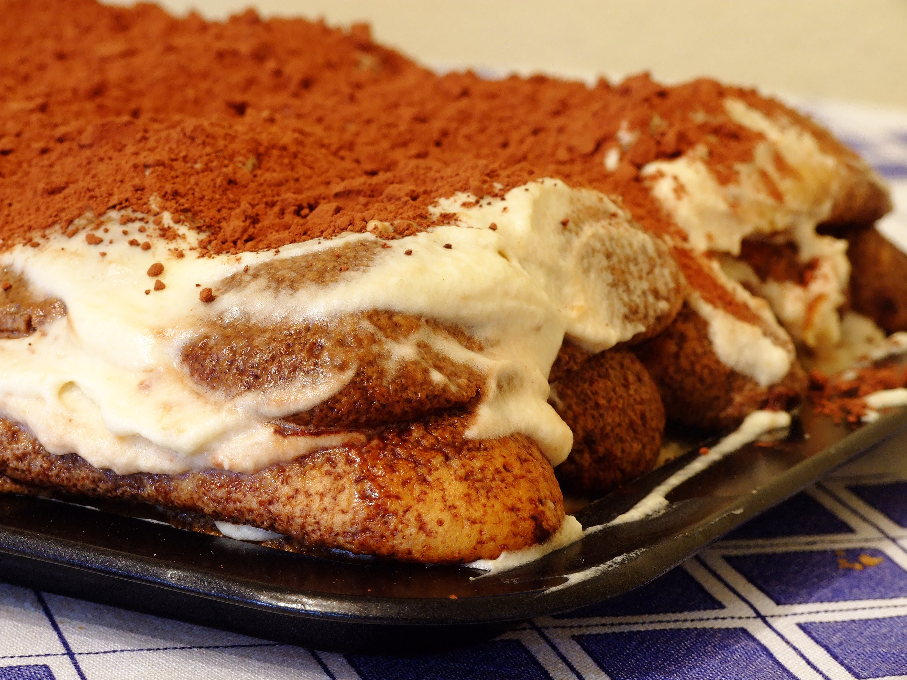

Tiramisu

"Tiramisu" by Raffaele Diomede, via Wikimedia Commons, licensed under CC BY 2.0.
Description
Italian dessert made of layers of biscuits soaked in coffee and cream.
Ingredients (1 serving)
- 2-3 savoiardi
- 2-3 tablespoons of cooled espresso
- 1/4 cup of mascarpone cheese
- 1-2 tablespoons of sugar
- 1 small egg
- A pinch of vanilla extract (optional)
- 1 teaspoon of cocoa powder
- 1-2 teaspoons of coffee liqueur (optional)
Steps
- Brew espresso and let it cool.
- Whisk egg yolk and sugar until pale and creamy.
- Mix in mascarpone until smooth.
- (Optional) Fold in whipped egg white or whipped cream for a lighter texture.
- Quickly dip savoiardi in coffee (don't soak too long).
- Layer: savoiardi -> cream -> savoiardi -> cream.
- Dust with cocoa powder.
- Chill for at least 2-4 hours (overnight is even better).
- Enjoy!
Return to the index